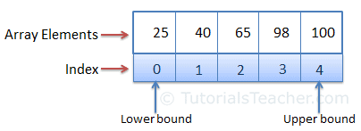

| Тема 1. Класс Array и массивы. | ||
| Назад | ||
|
Все массивы в C# построены на основе класса Array из пространства имен System. В обычно переменная используется для хранения литерального значения, тогда как массив используется для хранения нескольких литеральных значений. Массив — это структура данных, в которой хранится фиксированное количество литеральных значений (элементов) одного и того же типа данных. Элементы массива хранятся в памяти непрерывно. В C# массив может быть трех типов: одномерный, многомерный и зубчатый. Здесь вы узнаете об одномерном массиве. На следующем рисунке показано представление массива.  Этот класс определяет ряд свойств и методов, которые мы можем использовать при работе с массивами. Основные свойства и методы:
Объявление массива и инициализацияМассив может быть объявлен с помощью, указав тип его элементов в квадратных скобках.
Пример: объявление массива
Следующий оператор объявляет и добавляет значения в массив в одном операторе.
Пример: Объявление массива и инициализация
Выше массив может хранить до пяти целых чисел. Число 5 в
квадратных скобках определяет размер массива. Точно так же
размер массива равен трем. Элементы массива добавляются в виде
списка, разделенного запятыми, внутри фигурных скобок { }. Переменные типа массивов могут быть объявлены с помощью var без квадратных скобок.
Пример: Объявление массива с помощью var
Если вы добавляете элементы массива во время объявления, то размер не является обязательным. Компилятор определит его размер на основе количества элементов внутри фигурных скобок, как показано ниже.
Пример: Краткий синтаксис объявления массива
В следующем примере показаны недопустимые объявления массивов.
Пример: Неверное создание массива
Поздняя инициализацияНет необходимости объявлять и инициализировать массив в одном операторе. Вы можете сначала объявить массив, а затем инициализировать его с помощью оператора new.
Пример: поздняя инициализация
Доступ к элементам массиваДоступ к элементам массива можно получить с помощью индекса. Индекс - это число, связанное с каждым элементом массива, начиная с индекса 0 и заканчивая размером массива - 1. В следующем примере добавление/обновление и извлечение элементов массива с помощью индексов.
Пример: доступ к элементам массива с помощью индексов
Обратите внимание, что попытка добавить больше элементов, чем
указано, приведет к . Доступ к массиву с помощью цикла for
Используйте цикл для доступа к элементам массива. Используйте
свойство массива в условном выражении цикла for.
Пример: Доступ к элементам массива с помощью цикла for
Доступ к массиву с помощью цикла foreach
Используйте цикл для чтения значений элементов массива без
использования индекса.
Пример: Доступ к массиву с помощью цикла foreach
Методы LINQВсе массивы в C# являются производными от абстрактного базового класса System.Array.
Класс Array реализует интерфейс, поэтому вы можете использовать
методы расширения LINQ, такие как , , , и т. д. Список всех
методов расширения можно
посмотреть здесь.
Пример: методы LINQ
Класс также включает методы для создания, обработки, поиска и
сортировки массивов. Список всех методов Array можно
посмотреть здесь.
Пример: методы массива
Передача массива в качестве аргументаМассив может быть передан в качестве аргумента параметру метода. Массивы являются ссылочными типами, поэтому метод может изменять значение элементов массива.
Пример: передача массива в качестве аргумента
Подробне
Разберем самые используемые методы. Сортировка массиваОтсортируем массив с помощью метода Sort(): string[] people = { "Tom", "Sam", "Bob", "Kate", "Tom", "Alice" };
Array.Sort(people);
foreach (var person in people) Console.Write($"{person} "); // Alice Bob Kate Sam Tom Tom
Этот метод имеет много перегрузок. Например, одна из версий позволяет отсортировать только часть массива: string[] people = { "Tom", "Sam", "Bob", "Kate", "Tom", "Alice" };
// сортируем с 1 индекса 3 элемента
Array.Sort(people, 1, 3);
foreach (var person in people) Console.Write($"{person} "); // Tom Bob Kate Sam Tom Alice
Поиск индекса элементаstring[] people = { "Tom", "Sam", "Bob", "Kate", "Tom", "Alice" };
// находим индекс первого элемента "Tom"
int tomFirstIndex = Array.IndexOf(people, "Tom");
// находим индекс последнего элемента "Tom"
int tomLastIndex = Array.LastIndexOf(people, "Tom");
// находим индекс первого элемента, у которого длина строки больше 3
int lengthFirstIndex = Array.FindIndex(people, person => person.Length > 3);
// находим индекс последнего элемента, у которого длина строки больше 3
int lengthLastIndex = Array.FindLastIndex(people, person => person.Length > 3);
Console.WriteLine($"tomFirstIndex: {tomFirstIndex}"); // 0
Console.WriteLine($"tomLastIndex: {tomLastIndex}"); // 4
Console.WriteLine($"lengthFirstIndex: {lengthFirstIndex}"); // 3
Console.WriteLine($"lengthLastIndex: {lengthLastIndex}"); // 5
// находим индекс элемента "Bob"
// для бинарного поиска коллекцию нужно отсортировать
Array.Sort(people); // Alice Bob Kate Sam Tom Tomint bob
Index = Array.BinarySearch(people, "Bob");
Console.WriteLine($"bobIndex: {bobIndex}"); // 1
Если элемент не найден в массиве, то методы возвращают -1. Поиск элемента по условиюstring[] people = { "Tom", "Sam", "Bob", "Kate", "Tom", "Alice" };
// находим первый и последний элементы
// где длина строки больше 3 символов
string first = Array.Find(people, person => person.Length > 3);
Console.WriteLine(first); // Kate
string last = Array.FindLast(people, person => person.Length > 3);
Console.WriteLine(last); // Alice
// находим элементы, у которых длина строки равна 3
string[] group = Array.FindAll(people, person => person.Length == 3);
foreach (var person in group) Console.WriteLine(person);// Tom Sam Bob Tom
Изменение порядка элементов массиваНапример, изменим порядок элементов: string[] people = { "Tom", "Sam", "Bob", "Kate", "Tom", "Alice" };
Array.Reverse(people);
foreach (var person in people) Console.Write($"{person} ");
// "Alice", "Tom", "Kate", "Bob", "Sam", "Tom"
Также можно изменить порядок только части элементов: string[] people = { "Tom", "Sam", "Bob", "Kate", "Tom", "Alice" };
// изменяем порядок 3 элементов начиная c индекса 1
Array.Reverse(people, 1, 3);
foreach (var person in people) Console.Write($"{person} ");
// "Tom", "Kate", "Bob", "Sam", "Tom", "Alice"
В данном случае изменяем порядок только 3 элементов начиная c индекса 1. Изменение размера массиваДля изменения размера массива применяется метод Resize. Его первый параметр - изменяемый массив, а второй параметр - количество элементов, которые должны быть в массиве. Если второй параметр меньше длины массива, то массив усекается. Если значение параметра, наоборот, больше, то массив дополняется дополнительными элементами, которые имеют значение по умолчанию. Причем первый параметр передается по ссылке: string[] people = { "Tom", "Sam", "Bob", "Kate", "Tom", "Alice" };
// уменьшим массив до 4 элементов
Array.Resize(ref people, 4);
foreach (var person in people) Console.Write($"{person} ");
// "Tom", "Sam", "Bob", "Kate"
Копирование массиваМетод Copy копирует часть одного массива в другой: string[] people = { "Tom", "Sam", "Bob", "Kate", "Tom", "Alice" };
var employees = new string[3];
// копируем 3 элемента из массива people c индекса 1
// и вставляем их в массив employees начиная с индекса 0
Array.Copy(people,1, employees,0, 3);
foreach (var person in employees) Console.Write($"{person} ");
// Sam Bob Kate
В данном случае копируем 3 элемента из массива people начиная c индекса 1 и вставляем их в массив employees начиная с индекса 0.
|
||
| Конспект подготовлен Бакулиным А. М. 2012 год. | ||